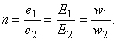

6.1.4. Коэффициент трансформации и
коэффициент полезного действия трансформатора
коэффициент полезного действия трансформатора
Отношение мгновенных или действующих ЭДС обмоток называют коэффициентом трансформации трансформатора
(6.1)
В трансформаторе с ненасыщенным ферромагнитным сердечником уровни напряжения и тока во вторичной обмотке будут другими по сравнению с электрическими величинами в первичной обмотке. Например, при w2 < w1, напряжение во вторичной обмотке U2 меньше в n раз напряжения U1, а ток в ней соответственно возрастает приблизительно в n раз:
η = P2/P1 ≈ 0.97...0.995. (6.3)